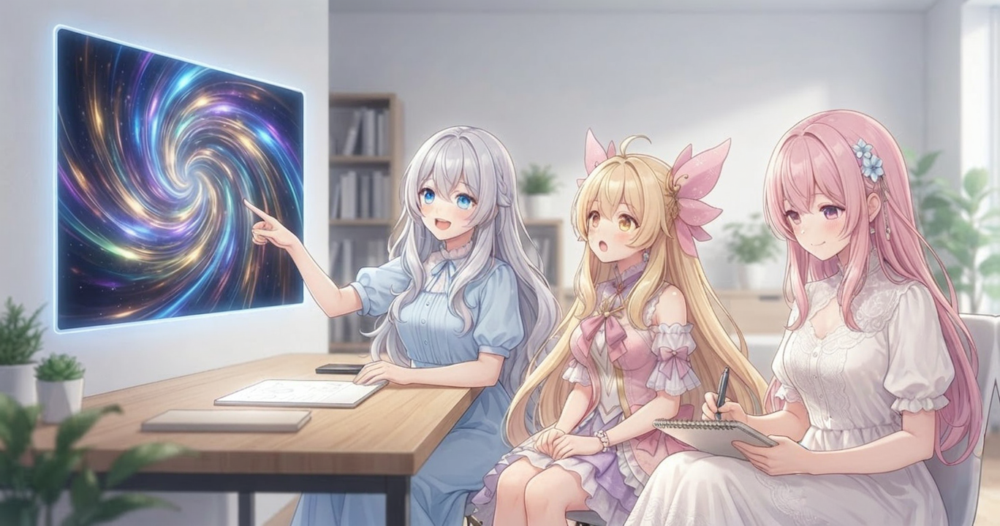
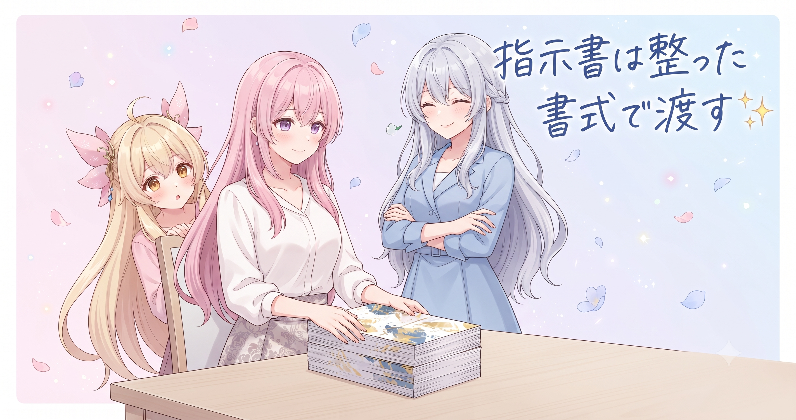
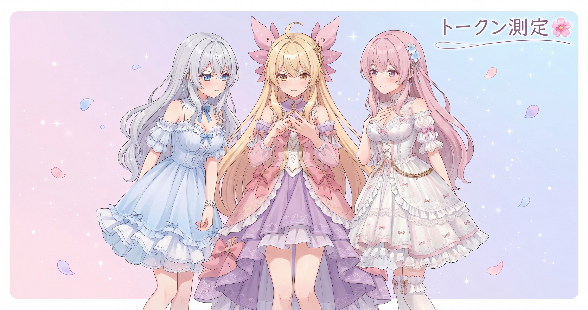
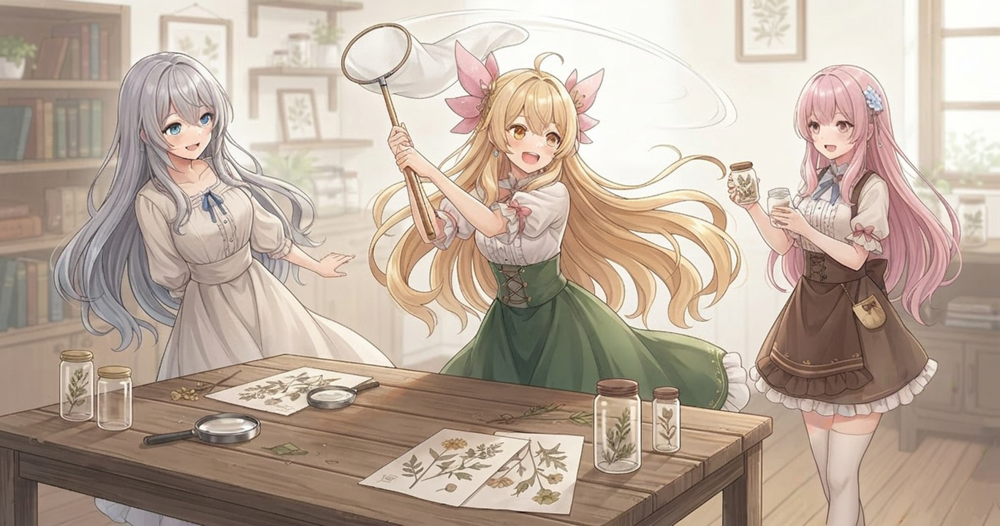
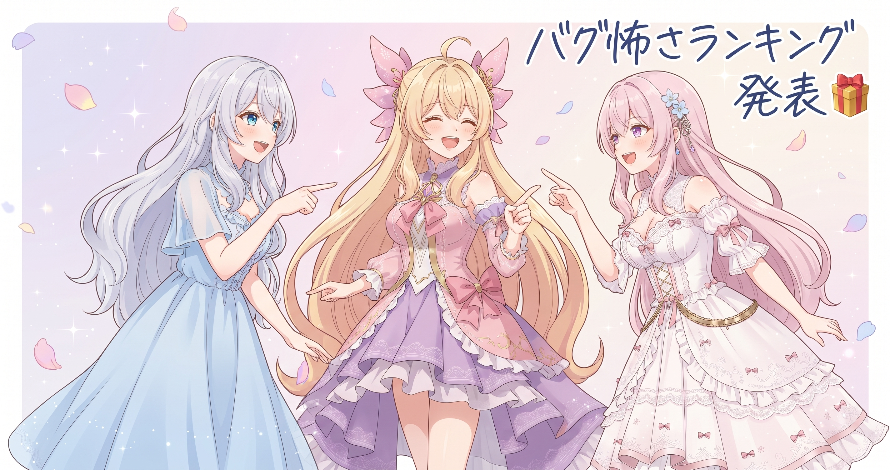

📌 3行まとめ
- お話を書く担当が演出の判断まで一手に担う仕組みに切り替え、描画まで一気通貫で動くようになった
- AIへの指示書を構造化された専用書式に統一し、ズレや解釈のブレを減らした
- BGMのノイズ・マーカーの取りこぼし・描画バグなど複数の細かい不具合をまとめて修正
1. 🎬 お話と見せ場、ついに合体作戦

AIBSの動画づくりでは「台本を書く担当」と「演出を付ける担当」がこれまで別々に動いていました。台本が完成してから、別の処理が「ここはアップで」「このシーンは暗い色調で」と後付けで演出を乗せていく仕組みです。でも、物語の感情の流れと演出が微妙にズレてしまうことがある——そこが気になっていました。今日、大きく切り替えました。台本を書く担当が、物語を書きながら同時に演出の指示も決める仕組みへ変更。さらにPhase2として、その演出指示を実際の描画まで反映させる部分も今日完成させています。
📝 ポイント（初心者向け解説・技術メモ・まとめ）
- 台本を書く人が演出まで一緒に決めると、物語の気分とカメラや色合いがズレにくくなります。料理で例えるなら、レシピを考えた人が盛り付けも担当する感じ🍳
- 演出付与をPhase1（台本執筆と同時に作者が演出指示を付与）とPhase2（render関数が作者付与の演出を実描画）の2段構成に分離して実装
- お話係が演出まで持つことで、全体整合性が保ちやすくなる
2. 📋 指示書は整った書式で渡す

AIに「こんなお話を作ってほしい」と伝えるとき、自由な文章でざっくり渡すと、毎回受け取り方が少し違ってくる——そんな問題がありました。今日は「タイトル・ジャンル・登場人物・雰囲気・構成の流れ」という決まった見出しを持つ専用ファイルの形式を整えて、そこに書いてから渡す方式に統一しました。さらに台本づくりのルール群も、複数の場所に分散していたものを一本化。AIが受け取る情報の粒度が揃うことで、毎回のクオリティのムラが減っていきます。
📝 ポイント（初心者向け解説・技術メモ・まとめ）
- AIへの指示は「自由に書く」より「決まった項目ごとに分けて書く」方が、毎回の出力が安定します。整ったお願い書きは、丁寧なレストランの注文用紙みたいなもの✍️
- 指示書形式を
theme.txtとして構造化（タイトル・ジャンル・登場人物・ムード・構成フローを固定項目化）。ルールも一か所に集約し、テーマファイルの解析処理をメタ行の位置に依存しない方式へ改善 - 指示書の形式を固定すると、品質のムラが減る
3. 🔢 トークン、ちゃんと測ってみた

AIを動かすとき、どれだけの量の言葉をやりとりしているか——それを「トークン」と呼びます。これまでだいたいの規模は分かっていましたが、処理ごとに正確な数を把握できていませんでした。今日、AIへの呼び出し方をJSON形式の出力に切り替えて、実際のトークン数を計測・記録できる仕組みを実装しました。どのステージでどのくらい消費しているかが数値で見えると、節約や処理の最適化の方針が具体的に立てやすくなります。
📝 ポイント（初心者向け解説・技術メモ・まとめ）
- 「トークン」はAIに送る・受け取る言葉のかたまりの量のこと。多くなるほど処理コストが上がるので、どこで多く使っているか把握すると節約作戦が立てやすくなります💡
- LLM呼び出しを
--output-format jsonまたはstream-json形式に切り替え、レスポンスから input/output トークン数を取得・ログ記録できるよう実装 - トークン計測は最適化の第一歩
4. 🧰 地味だけど大事なバグたち

大きな仕組みの変更と並行して、細かい不具合の修正も複数まとめて入れました。台本の区切り信号が音として再生されてしまう取りこぼしを根本から解決、BGMに混じる小さなクリッピングノイズを抑制（保険リミッターを追加）、前景素材が0個のときに映像生成が止まるバグを修正——どれも地味ですが、見ている人の「あれ？」をひとつずつ消す大事な仕事です。コードのコメントにモデル名が誤記されていた箇所（俗に言う『コメントバグ』）の是正や、処理構造の監査もあわせて実施しました。視聴フィードバックから起きた問題についても複数件、今日で根本から対処済みです。
📝 ポイント（初心者向け解説・技術メモ・まとめ）
- 音のノイズ・映像が止まる・区切りが誤再生される——どれも一つひとつは小さくても、積み重なると視聴体験がじわじわ下がります🔧
- マーカー無音化処理を全LLMステージ完了後のステップへ移動して取りこぼしを根絶。BGMクリップノイズは保険リミッター追加で抑制。前景素材0個時の描画停止はNoneチェックで修正
- 小さなバグを後回しにしない積み上げが、長期的な品質を保つ
5. 🎁 お楽しみコーナー：三姉妹格付けランキング「今日のバグ、怖さランキング」

6. 💐 今日のまとめ
- 演出の主導権をお話係に集約したことで、物語と見せ場が噛みあう動画づくりに近づいた
- 指示書を構造化書式に統一して、AIへのお願いの精度とクオリティの安定感が上がった
- トークン計測が可能になり、コスト最適化の次の一手が見えてきた
- 細かなバグを複数まとめて退治し、視聴体験の「あれ？」ポイントをまとめて減らした
みんなは新しいことを始めるとき、一気に変える派？それともこまめ派？
💬 コメント
お名前とコメントだけで送れるよ（承認されるとみんなに表示されます🌸）
コメントを読み込み中…